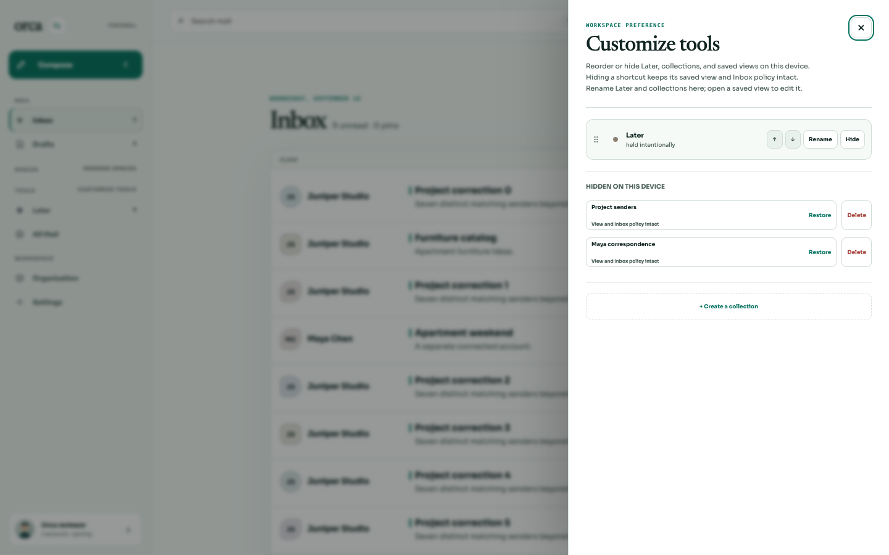
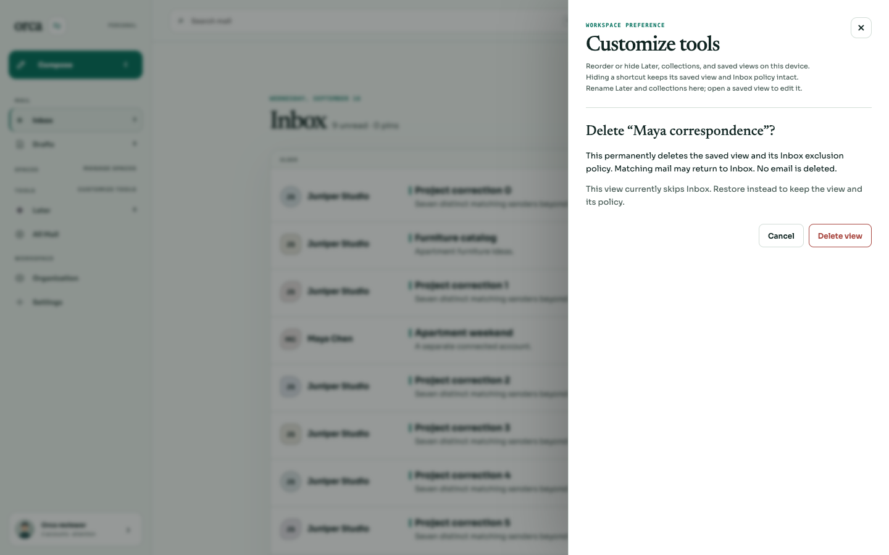
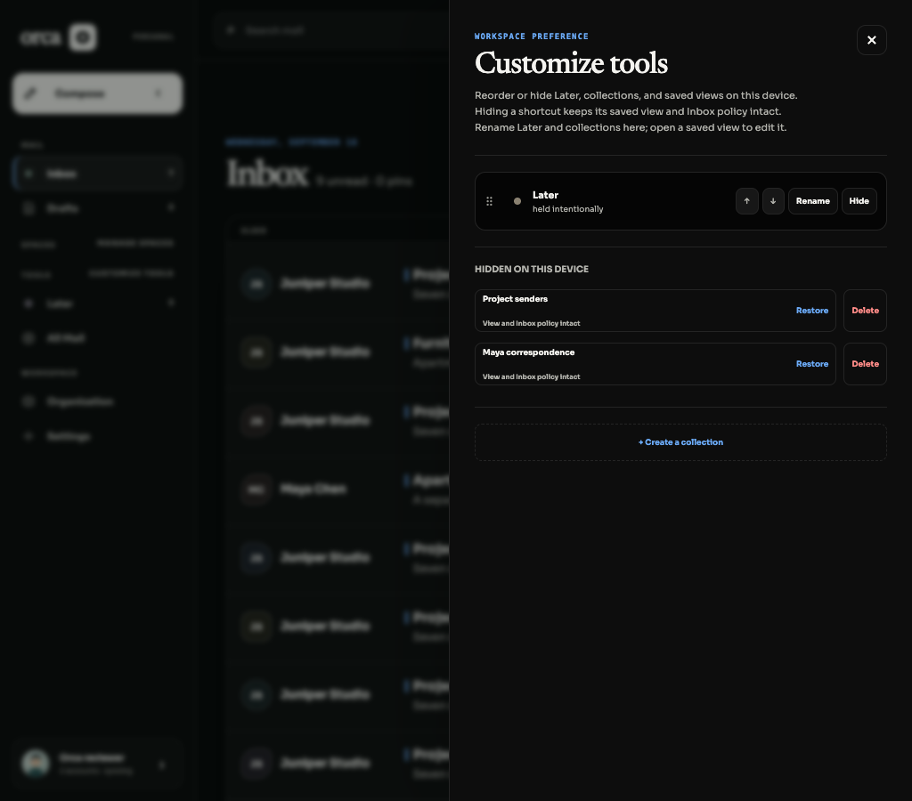
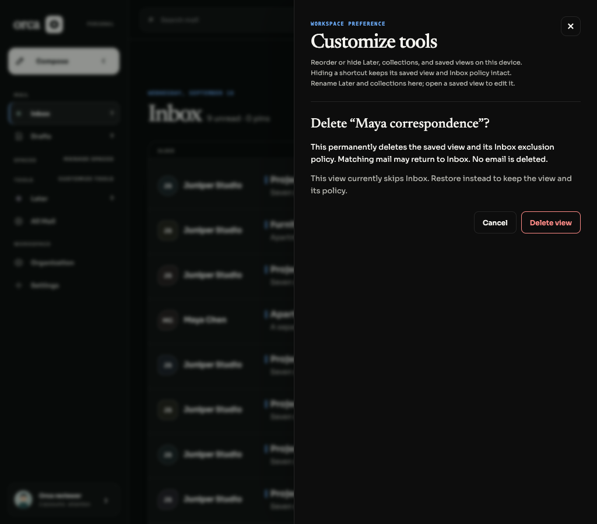
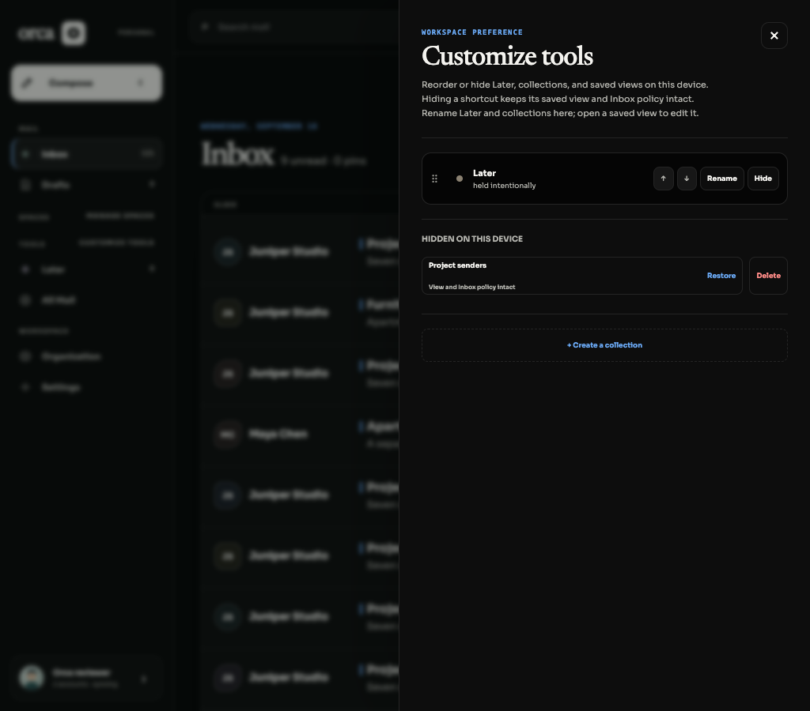

BRE-406 · 16 September 2026Delete a hidden saved view
Hidden saved views retain Restore and now offer Delete. Confirmation names the view and explains that deleting its Inbox exclusion policy may return matching mail to Inbox. No email is deleted.
Verified live flow
- Used real prepare → preview → commit against a disposable SQLite database to create Maya correspondence (skip Inbox) and Project senders (keep in Inbox).
- Hid both views in Customize tools. Both expose Restore and Delete in Light and Black.
- Opened Maya deletion confirmation, then Cancel. Focus returned to Delete Maya correspondence. Canonical view records, policies and all compared mail/provider tables were unchanged.
- Confirmed Maya deletion in Black. Its hidden row disappeared, local order/hidden preferences were cleaned, focus returned to Close, and Project senders retained Restore/Delete.
- Real API reads confirmed Maya was deleted and Project senders was completely unchanged. Matching thread work-0 returned to Inbox; the first Inbox page changed from 9 to the 100-message page limit.
- All 13 compared email/provider/routing/collection tables remained byte-for-byte unchanged. Only the saved view and its associated policy/revision bookkeeping were removed or updated by the authorized API.
Database and Inbox proof · Browser assertions
Safety and regression evidence
- Delete uses the existing Organization apply authorization, reviewed view/workspace revisions, and stable idempotency envelope. A conflict requires refresh and another confirmation.
- Cancel and duplicate clicks are blocked while saving. Cancel/Escape/backdrop return focus; success focuses a surviving control.
- Demo deletion is explicitly disabled with nearby explanation, so sample views cannot reappear after a claimed permanent deletion.
bun test apps/web/src/saved-view-deletion.test.tsx: 8 pass, 58 assertions — cancel, pending duplicate prevention, revision conflict, ambiguous retry, read-only authority, demo behavior, lost-response reconciliation, partial-response safety.bun test apps/web/src/desktop-switch.interaction.test.tsx --test-name-pattern 'hidden saved-view Delete|Customize tools': 2 pass, 24 assertions — existing Hide/Restore and keyboard focus lifecycle.
Source commits: 75e8f4b, cac682b. Parent owns full CI/integration. Named headless agent-browser; real scratch API and Vite. Initial local harness startup timed out; one bounded restart succeeded. These screenshots and database checks are from the successful retry. Browser and temporary servers were closed afterward.
Visual evidence

Hidden saved views with separate Restore and Delete · Light 1440px
Explicit policy and email explanation · Light
Hidden saved views · Black 1024px
Delete confirmation · Black 1024px
Deletion completed; other hidden view preserved; focus returned to Close